🌾
Aliments pour bétail
Aliments de qualité adaptés à chaque espèce et à chaque stade d'élevage.
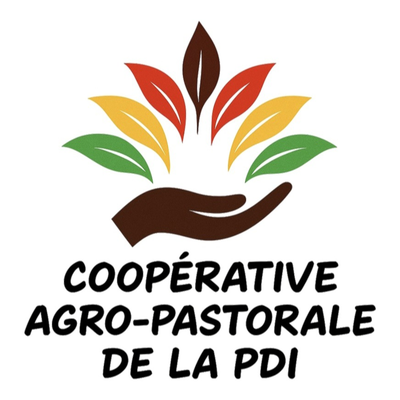
Pointe-Noire · République du Congo
Aliments pour bétail, produits vétérinaires, élevage porcin et amélioration génétique : nous accompagnons les éleveurs du Congo vers des élevages plus sains et plus productifs.
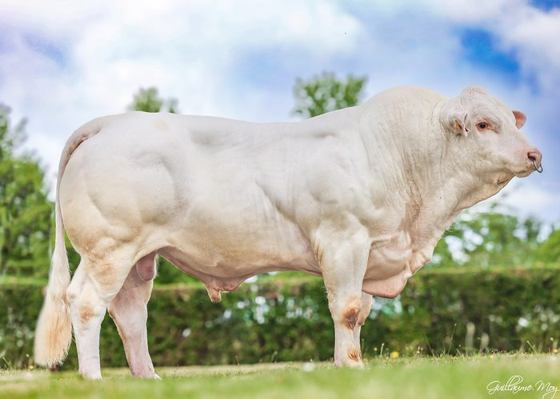
Ce que nous faisons
Un accompagnement complet de l'éleveur, de l'alimentation à la génétique.
Aliments de qualité adaptés à chaque espèce et à chaque stade d'élevage.
Médicaments, compléments et produits d'hygiène pour la santé de vos animaux.
Vaccins pour protéger vos porcs contre les principales maladies.
Production porcine dans notre ferme de Djeno, avec des pratiques modernes.
Des reproducteurs et des lignées sélectionnés pour de meilleures performances.
Semences de qualité et mise en œuvre de l'insémination dans vos élevages.
Conseils techniques, suivi sur le terrain et formations pratiques pour faire progresser votre élevage.
Boutique en ligne
Génétique, santé animale, matériel et équipement d'élevage : ajoutez vos produits au panier et envoyez votre commande ou votre demande de devis en un clic.
Prix indicatifs en F CFA par unité, hors transport et dédouanement. Les produits vétérinaires, hormones, antibiotiques et vaccins sont délivrés sur commande et sur devis uniquement.
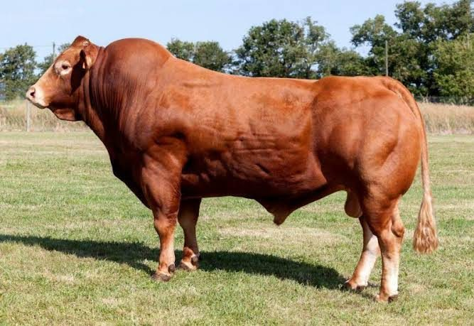
Performance de vos élevages
Représentant officiel de GENES DIFFUSION pour les deux Congos, CAP DE LA PDI met à la disposition des éleveurs une génétique reconnue pour améliorer la croissance, la prolificité et la qualité des animaux.
Les grandes races porcines sélectionnées en France par nos partenaires GENES DIFFUSION et AXIOM. Le croisement le plus courant associe une truie Large White × Landrace et un verrat Piétrain ou Duroc.
Truie prolifique, bonne mère, croissance rapide. Base de la plupart des élevages modernes.
Commander des semencesGrandes portées et bonne production laitière. Croisée avec la Large White, elle donne une truie F1 robuste et productive.
Commander des semencesCarcasses très riches en muscle. La version « NN » est indemne du gène de sensibilité au stress, un atout en climat chaud.
Commander des semencesRace rustique, bonne résistance à la chaleur, viande tendre et savoureuse grâce à son persillé.
Commander des semencesGrâce à GENES DIFFUSION, nous proposons des semences de taureaux sélectionnés, pour la viande comme pour le lait.
Race à viande très musclée, croissance rapide, excellente en croisement pour améliorer les troupeaux locaux.
Voir le prix et commanderCarcasses de grande qualité, vêlages faciles, bonne rusticité.
Voir le prix et commander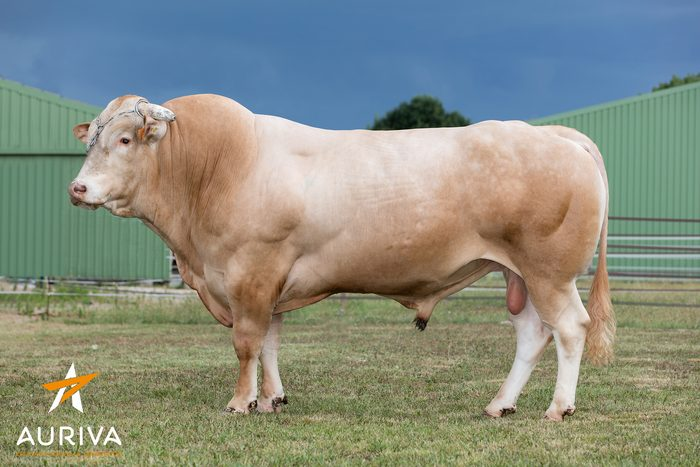
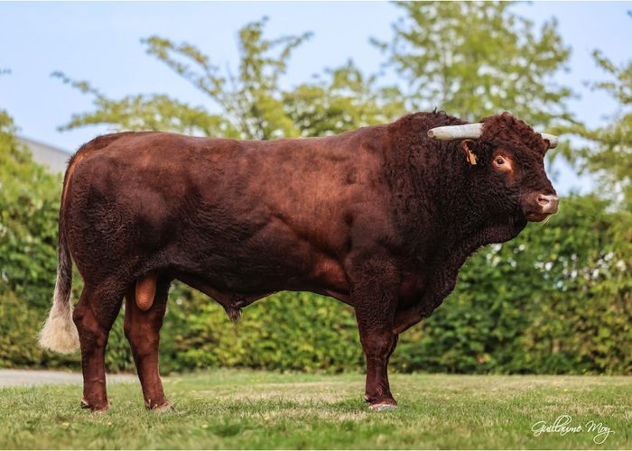
Race rustique, résistante, bonne mère, adaptée aux conditions difficiles.
Voir le prix et commander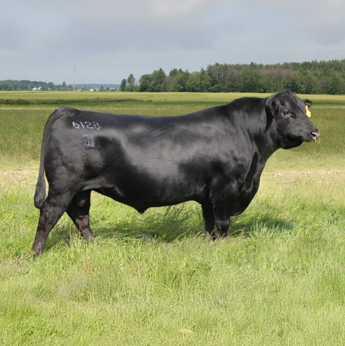
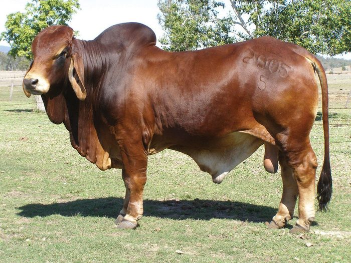
Zébu très résistant à la chaleur et aux tiques : idéal en croisement en zone tropicale.
Voir le prix et commander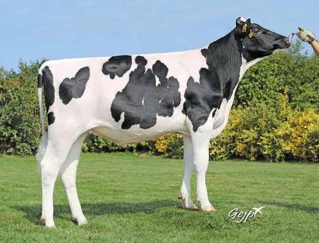
Première race laitière au monde, très forte production de lait.
Voir le prix et commander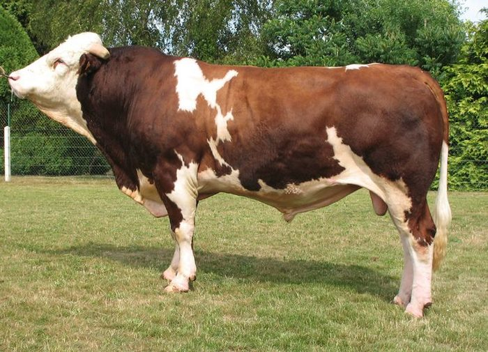
Bonne production de lait riche, robuste, bonne valeur bouchère.
Voir le prix et commanderLignées et disponibilités à confirmer selon les arrivages : contactez-nous pour choisir la génétique adaptée à votre élevage.
À télécharger
Nos outils Excel pour piloter votre élevage, en téléchargement immédiat. Paiement sécurisé via Chariow.
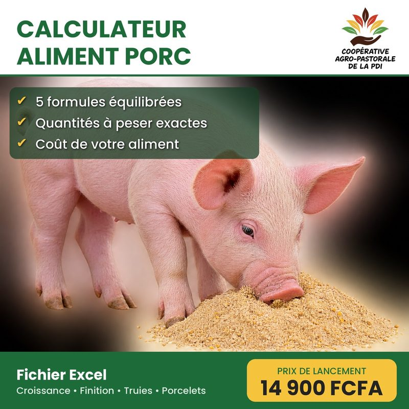
Prix de lancement14 900 FCFA
Acheter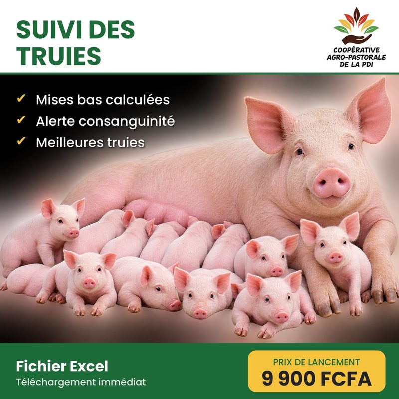
Prix de lancement9 900 FCFA
AcheterOù nous trouver
Avenue Félix TCHIKAYA
Pointe-Noire
Pointe-Noire
Pointe-Noire
Djeno, Pointe-Noire
Ils nous font confiance
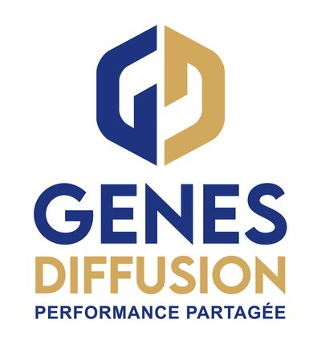
Génétique bovine et porcine – CAP DE LA PDI est son représentant pour les deux Congos.
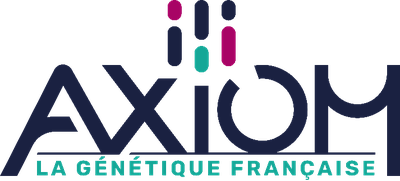
Génétique porcine française.
Partenaire de CAP DE LA PDI.
Parlons de votre élevage